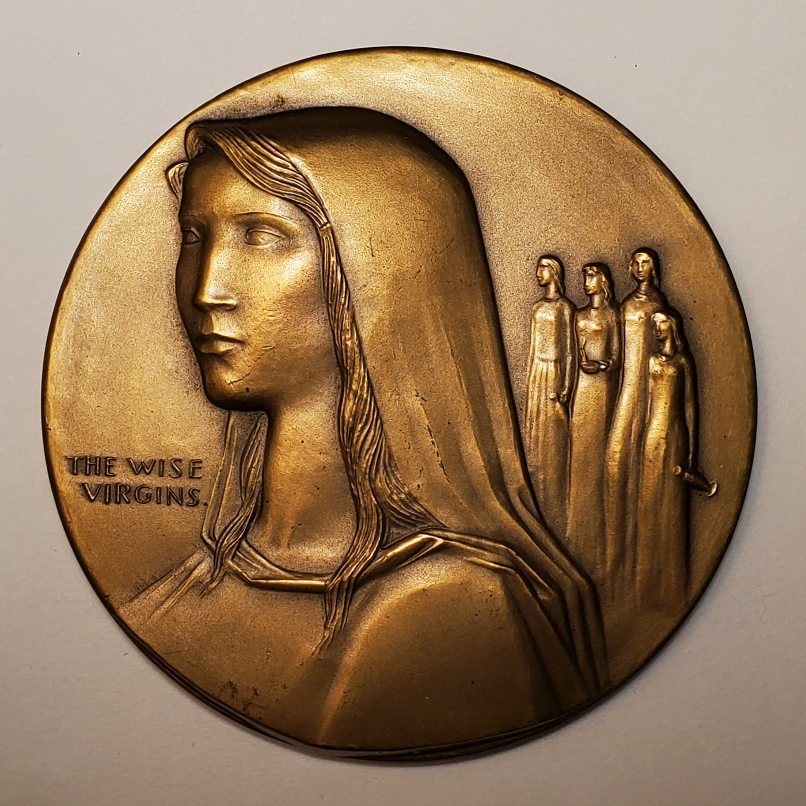
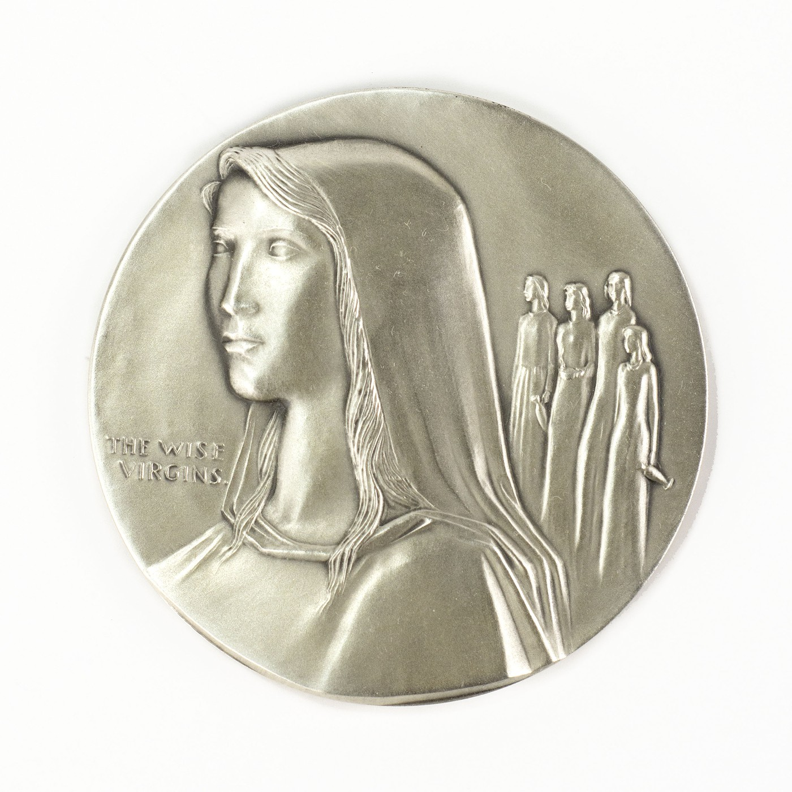
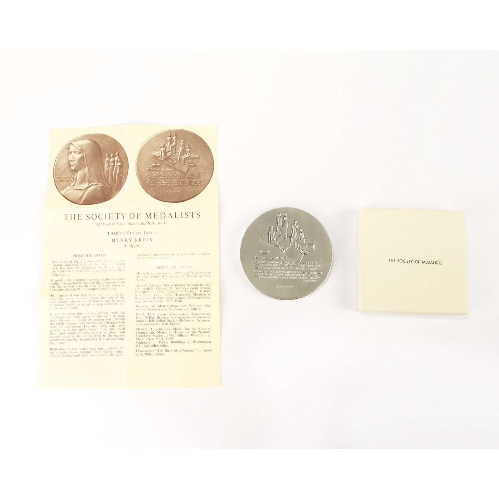
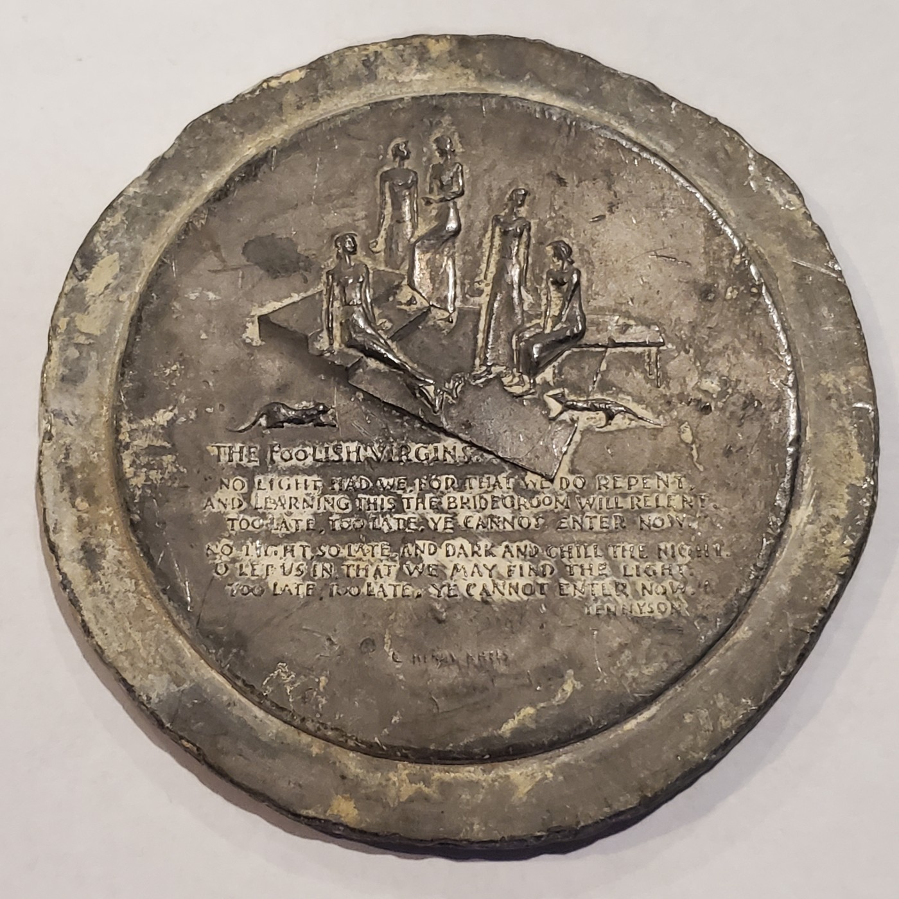
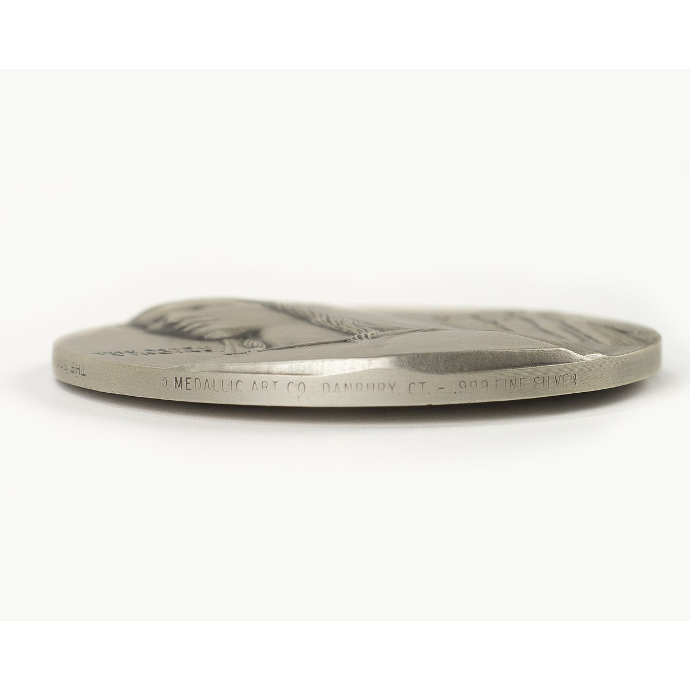

Society of Medalists · 36th issue · 1947
Wise and
Foolish Virgins
Kreis paired the biblical parable of vigilance with lines from Tennyson, contrasting the prepared wise virgins with those who arrive too late.
- Designer
- Henry Kreis
- Issuer
- Society of Medalists
- Producer
- Medallic Art Company
- Compositions
- Bronze and .999 fine silver
Family specimens
Bronze and silver
Use the arrows to compare the obverse and reverse of each medal.


Medal photographs from the Kreis family collection.
The imagery
Preparedness and regret
The obverse gives the wise virgins a calm, monumental presence. A large veiled figure dominates the field while four companions stand behind her.
The reverse places the five foolish virgins on angular steps with their empty lamps. Two cats move through the scene, a detail the original insert describes with sympathy and humor: the cats have stolen three lamps and play with them in the night.
The inscription
Tennyson's warning
The insert identifies the New Testament parable as the subject and explains that lines from Tennyson on the reverse recall it “to those who should have forgotten it.”
The repeated answer—“Too late, too late, ye cannot enter now”—binds the reverse inscription to the visual contrast between readiness and regret.
Production evidence
Insert, box, and test strike


Archival objects from the Kreis family collection.
Kreis's process
Cut directly into plaster
In the original insert, Kreis stated that neither side was modeled conventionally. Instead, he cut the designs directly from the negative into plaster.
He wrote that this method permitted sharp, clear execution of small details and guided the sculptor toward a simple, uncomplicated design.
Silver specimen
Edge inscriptions
The bronze edge varieties can be added when photographs become available.

The four views record the medal as the Society of Medalists' 36th issue, dated 1947, and identify Henry Kreis as sculptor. They also name the Medallic Art Company in Danbury, Connecticut, and state the silver fineness.
A separate segment reads “ONE OF LIMITED ISSUE OF 700.” The wording is ironic in retrospect: 700 was the intended limit, but a spike in silver prices reduced demand so sharply that nowhere near that number was made. Published records report only 50 silver examples.
Recorded details
Medal details
- Year
- 1947
- Series
- Society of Medalists
- Issue
- 36th
- Designer
- Henry Kreis
- Producer
- Medallic Art Company
- Diameter
- 73 mm
- Compositions shown
- Bronze and .999 fine silver
- Silver edition statement
- Limited issue of 700; about 50 made
- Additional material
- Lead reverse test strike
- Bronze edge varieties
- Documentation pending
Research sources
Object and issue records
- Original Society of Medalists 36th-issue insert and presentation box, Kreis family collection.
- Bronze, silver, edge, and lead test-strike photographs, Kreis family collection.
- Medallic Art Collector: “Wise and Foolish Virgins” by Henry Kreis